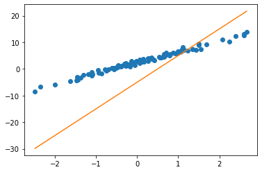

import torch
import numpy as np
import matplotlib.pyplot as plt DL 회귀분석 정리
- toc:true
데이터 준비
torch.manual_seed(43052)
ones= torch.ones(100)
x,_ = torch.randn(100).sort()
X = torch.stack([ones,x]).T # torch.stack([ones,x],axis=1)W = torch.tensor([2.5,4])ϵ = torch.randn(100)*0.5 # 입실론은 오차를 의미함y = X @ W + ϵplt.plot(x, y, 'o')가중치와 bias 준비
What = torch.tensor([-5.0,10.0],requires_grad=True)
Whattensor([-5., 10.], requires_grad=True)yhat = X @ What plt.plot(x, y, 'o')
plt.plot(x, yhat.data, '-')
노란선으로 파란선을 맞춰야 함, 맞추기 위해서는 얼마나 틀렸는지를 알아야 함 -> loss function
- \(loss=\sum_{i=1}^{n}(y_i-\hat{y}_i)^2=\sum_{i=1}^{n}(y_i-(\hat{w}_0+\hat{w}_1x_i))^2 = ({\bf y}-{\bf\hat{y}})^\top({\bf y}-{\bf\hat{y}})=({\bf y}-{\bf X}{\bf \hat{W}})^\top({\bf y}-{\bf X}{\bf \hat{W}})\)
궁극적으로 조합 \((\hat{w}_0,\hat{w}_1)\)에 대하여 가장 작은 loss를 찾아내야 함
- 찾는 방법: loss를 미분하여 기울기를 얻는다 \(\to\) 기울기 부호의 반대 방향으로 이동한다. \(\to\) 움직이는 보폭(크기)은 (loss미분값 * 학습률(lr, α))
- \({\bf W} \leftarrow {\bf W} - \alpha \times \frac{\partial}{\partial {\bf W}}loss(w_0,w_1)\)
- \(\frac{\partial}{\partial {\bf W}}loss(w_0,w_1)\) 이 값은 아래의 코드를 통해 계산할할 수 있다.
loss.backward()- 위에서 계산한 미분값은 W.grad를 통해 확인할 수 있다.
- 정리하자면 loss를 정의한 후
W = W - 학습률 * W.grad+ W를 업데이트한 후 W.grad = None을 해줘야 함 + 미분을 통해 업데이트를 하기 위해서는 아래와 같은 옵션을 주어야 한다.
torch.tensor([-5.0,10.0],requires_grad=True)훈련 방법
학습 방법과 선형회귀 step별 다양한 표현 방법
alpha=0.001
for epoc in range(30): ## 30번 반복합니다!!
# step 1
yhat=X@What # w와 b를 만드는
# type1) torch.nn.Linear(input, ouput, bias=True) X에 1로 구성된 열이 없을때 사용
# type2) torch.nn.Linear(input + 1, ouput, bias=False) X에 1로 구성된 열이 있있을때 사용
# step 2
loss=torch.sum((y-yhat)**2) # loss = torch.nn.MSELoss(yhat, y)
# step 3
loss.backward()
# step 4 -> optimizer를 사용 # optim = torch.optim.SGD(net.parameters(),lr=1/10) 이런 식으로 선언 # net.parameters()는 optimizer에 업데이트할 변수를 지정 # lr은 학습률 지정
What.data = What.data-alpha * What.grad # optim.step()
What.grad=None # optim.zero_grad()plt.plot(x, y, 'o')
plt.plot(x, yhat.data, '-')훈련과정 기록하기
loss_history = [] # 기록하고 싶은것 1
yhat_history = [] # 기록하고 싶은것 2
What_history = [] # 기록하고 싶은것 3
What= torch.tensor([-5.0,10.0],requires_grad=True)
alpha=0.001
for epoc in range(30):
#
yhat=X@What ; yhat_history.append(yhat.data.tolist())
#
loss=torch.sum((y-yhat)**2); loss_history.append(loss.item())
#
loss.backward()
#
What.data = What.data-alpha * What.grad; What_history.append(What.data.tolist())
What.grad=Noneplt.plot(loss_history)정리
- 학습률이 너무 크면 스텝이 너무 커서 loss의 순간기울기가 0이 되는 점을 찾지 못할 수 있다. (학습률이 너무 작으면 loss의 순간기울기가 0이 되는 점을 찾을 수는 있지만 학습시간이 오래 걸린다는 단점이 있음)
- local minimum과 global minimum이 있는 loss 곡선은 초기 W가 중요하다.